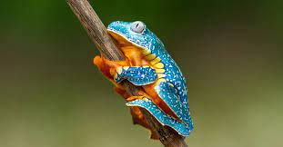
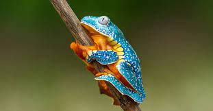
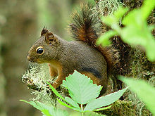
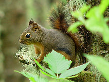
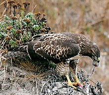
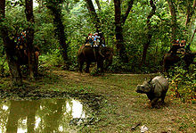

Amphibians

Carnivores


Animals are multicellular, eukaryotic organisms in the biological kingdom Animalia. With few exceptions, animals consume organic material, breathe oxygen, are able to move, can reproduce sexually, and go through an ontogenetic stage in which their body consists of a hollow sphere of cells, the blastula, during embryonic development. Over 1.5 million living animal species have been described—of which around 1 million are insects—but it has been estimated there are over 7 million animal species in total. Animals range in length from 8.5 micrometres (0.00033 in) to 33.6 metres (110 ft). They have complex interactions with each other and their environments, forming intricate food webs. The scientific study of animals is known as zoology.

Humans have historically tended to separate civilization from wildlife in a number of ways, including the legal, social, and moral senses. Some animals, however, have adapted to suburban environments. This includes such animals as feral cats, dogs, mice, and rats. Some religions declare certain animals to be sacred, and in modern times, concern for the natural environment has provoked activists to protest against the exploitation of wildlife for human benefit or entertainment. Global wildlife populations have decreased by 68% since 1970 as a result of human activity, particularly overconsumption, population growth, and intensive farming, according to a 2020 World Wildlife Fund's Living Planet Report and the Zoological Society of London's Living Planet Index measure, which is further evidence that humans have unleashed a sixth mass extinction event.[3][4] According to CITES, it has been estimated that annually the international wildlife trade amounts to billions of dollars and it affects hundreds of millions of animal and plant specimen.[5]
Wildlife has long been a common subject for educational television shows. National Geographic Society specials appeared on CBS since 1965, later moving to American Broadcasting Company and then Public Broadcasting Service. In 1963, NBC debuted Wild Kingdom, a popular program featuring zoologist Marlin Perkins as host. The BBC natural history unit in the United Kingdom was a similar pioneer, the first wildlife series LOOK presented by Sir Peter Scott, was a studio-based show, with filmed inserts. David Attenborough first made his appearance in this series, which was followed by the series Zoo Quest during which he and cameraman Charles Lagus went to many exotic places looking for and filming elusive wildlife—notably the Komodo dragon in Indonesia and lemurs in Madagascar.[14] Since 1984, the Discovery Channel and its spin off Animal Planet in the US have dominated the market for shows about wildlife on cable television, while on Public Broadcasting Service the NATURE strand made by WNET-13 in New York and NOVA by WGBH in Boston are notable. Wildlife television is now a multimillion-dollar industry with specialist documentary film-makers in many countries including UK, US, New Zealand, Australia, Austria, Germany, Japan, and Canada.[citation needed] There are many magazines and websites which cover wildlife including National Wildlife Magazine, Birds & Blooms, Birding (magazine), wildlife.net and Ranger Rick for children.
 

Wild animal suffering is the suffering experienced by nonhuman animals living outside of direct human control, due to harms such as disease, injury, parasitism, starvation and malnutrition, dehydration, weather conditions, natural disasters, and killings by other animals,[20][21] as well as psychological stress.[22] Some estimates indicate that these individual animals make up the vast majority of animals in existence.[23] An extensive amount of natural suffering has been described as an unavoidable consequence of Darwinian evolution[24] and the pervasiveness of reproductive strategies which favor producing large numbers of offspring, with a low amount of parental care and of which only a small number survive to adulthood, the rest dying in painful ways, has led some to argue that suffering dominates happiness in nature.[20][25][26] The topic has historically been discussed in the context of the philosophy of religion as an instance of the problem of evil.[27] More recently, starting in the 19th century, a number of writers have considered the subject from a secular standpoint as a general moral issue, that humans might be able to take actions toward preventing.[28] There is considerable disagreement around taking such actions, as many believe that human interventions in nature, for this reason, should not take place because of practicality,[29] valuing ecological preservation over the well-being and interests of individual animals,[30] considering any obligation to reduce wild animal suffering implied by animal rights to be absurd,[31] or viewing nature as an idyllic place where happiness is widespread.[25] Some have argued that such interventions would be an example of human hubris, or playing God and use examples of how human interventions, for other reasons, have unintentionally caused harm.[32] Others, including animal rights writers, have defended variants of a laissez-faire position, which argues that humans should not harm wild animals, but that humans should not intervene to reduce natural harms that they experience.[33][34]
 